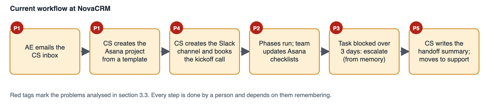
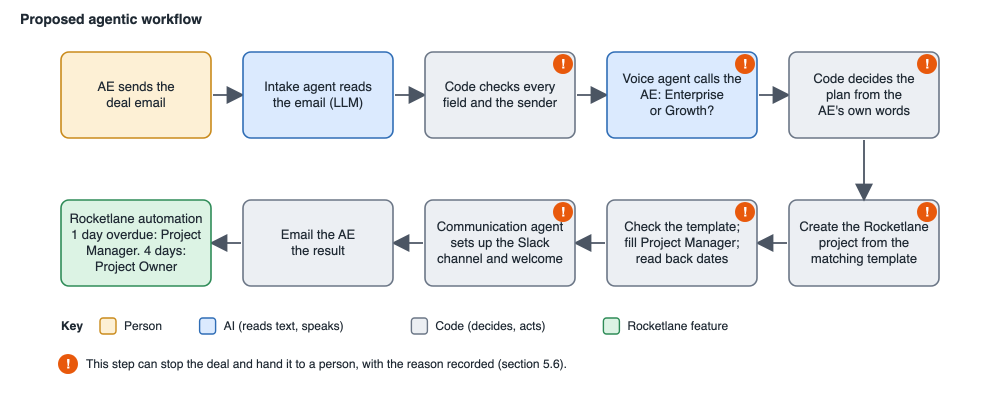

NovaCRM's Customer Success (CS) team onboards each new customer by hand. When a deal closes, the account executive (AE) emails the CS inbox. Someone then reads the email, creates a project, opens a Slack channel and schedules a kickoff call. The process relies on people remembering things: which template belongs to which plan, whether blocked work was escalated, and whether migrated data was actually checked.
This document sets out how I understand the current workflow, the requirements for improving it, and a proposed agentic workflow. In the proposal, two agents and a Rocketlane automation take over the clerical work. The deal email does not say which plan the customer bought, so the intake agent phones the AE to confirm it before anything is created. Code, not the language model, makes every decision, and anything uncertain goes to a person with the reason recorded.
The assumptions I made are in section 7, and the clarifying questions are in section 8.
2. Scope and sources
Sources. Priya's description of the process (CS Manager, from the discovery call), the assessment brief, and the clarifications received from Rocketlane (section 8.1).
In scope. Everything from the AE's deal email to a Rocketlane project and Slack channel being in place, and escalation of overdue tasks. Out of scope items are listed in section 11.
3. Current workflow
3.1 Process as described
#
Step
Who
Tools
1
A deal closes. The AE emails the CS inbox with the customer name and the Salesforce opportunity link.
AE
Email, Salesforce
2
CS creates a project in Asana from the standard onboarding template: about 15 tasks across four phases (Kickoff, Data Migration, Configuration, Go-Live).
CS team
Asana
3
CS creates a shared Slack channel with the customer and schedules the kickoff call.
CS team
Slack, calendar
4
Each phase has a checklist. The team updates Asana as work progresses.
CS team, customer
Asana
5
A task blocked for more than three days should be escalated.
CS team
None; depends on memory
6
At the end, the team writes a handoff summary and moves the customer to ongoing support.
CS team
Manual
3.2 Plan variants
Plan
Customer Success Manager (CSM)
Onboarding length
Enterprise
Dedicated CSM
30 days
Growth
Pooled CSM
14 days
The plan is not stated in the AE's email.

Figure 1. The current workflow. Every step is done by a person.
3.3 Problems and root causes
ID
Problem
What Priya said
Root cause
Consequence
P1
Wrong template used
"We sometimes mix up the templates."
The plan is not in the email, so it is recalled or guessed.
Wrong CSM model and wrong timeline for the customer
P2
Migration marked done, data not verified
"Data migration tasks were marked done but the customer's data wasn't actually verified... a few ugly escalations."
Completion is self-reported and no evidence is required.
The customer finds errors after go-live
P3
Blocked work not escalated
"That falls through the cracks a lot."
The rule depends on someone noticing.
Late delivery and surprises
P4
Manual setup at peak load
Project and channel are created by hand for every deal.
Clerical work done at the busiest moment, right after close.
Delay before the customer hears from NovaCRM; setup varies by person
P5
Handoff written from scratch
"We write a handoff summary."
No structured source for the summary.
Inconsistent handover (out of scope here)
4. Objectives and requirements
4.1 Objectives
Start every onboarding automatically from the deal email, with nobody re-keying data.
Use the correct template every time, based on a confirmed plan and never an assumed one.
Make delays and unverified work visible to the right person without relying on memory.
Keep a complete record of what was decided and why, and leave people in control of exceptions.
4.2 Functional requirements
Priority: M = must have, S = should have.
ID
Requirement
Priority
FR-1
Monitor the CS inbox and start onboarding for each new deal email exactly once.
M
FR-2
Identify the AE from the sender. Do not read or act on email from unknown or unauthenticated senders; escalate it.
M
FR-3
Extract the customer name, customer contact name and email, AE name, Salesforce opportunity link and any notes.
M
FR-4
Validate that every required field is present, well formed and actually appears in the email. If not, ask the AE for it. Do not guess.
M
FR-5
Block duplicates: a second email for the same opportunity, or a customer that already has a project.
M
FR-6
Place a real voice call to the AE, ask whether the customer is on Enterprise or Growth, and read the answer back.
M
FR-7
Accept the plan only on a clear, unambiguous answer. Otherwise retry, then escalate to a person. Never assume a plan.
M
FR-8
Create the Rocketlane project from the template matching the confirmed plan, with the right timeline, owner, customer and an external reference to the opportunity.
M
FR-9
Check that Rocketlane used the expected template, assign the Project Manager role, and read back the scheduled dates.
M
FR-10
Create a shared Slack channel whose name, topic and welcome message reflect the plan and the customer, and invite the customer.
M
FR-11
Tell the AE the outcome: what is missing, or that onboarding has been set up.
S
FR-12
In Rocketlane, notify the Project Manager when a task is one day overdue and the Project Owner when it is four days overdue.
M
FR-13
End the data migration phase with a verification task that requires evidence and cannot start before the other migration tasks.
M
FR-14
Log every action with a timestamp, its inputs, its outputs and the reason for the decision. Make the log exportable.
M
FR-15
Provide an escalation queue for anything the system stops on, with the reason, and alert the operations channel.
M
FR-16
Provide a dashboard showing every deal, its state, and what succeeded or failed.
S
4.3 Non-functional requirements
ID
Requirement
NFR-1
Auditability. Every action is recorded and can be traced to a deal and a reason.
NFR-2
Reliability. Repeated deliveries and retries must not create a second call, project or channel. Temporary failures in other systems are retried with increasing delays. Success is reported only after the other system has confirmed it.
NFR-3
Security. Email content and call transcripts are untrusted input. Inbound endpoints and webhooks are authenticated. No credentials are kept in source control.
NFR-4
Privacy. Contact details are masked on the dashboard, and only the fields needed are collected.
NFR-5
Visibility. The state of every deal is visible without reading logs.
NFR-6
Cost control. The number of calls per deal is capped, and the model cost per email is small and measurable.
NFR-7
Maintainability. Changes to tasks, durations and roles are made in Rocketlane templates and need no code change.
5. Proposed agentic workflow
5.1 Design principle
A language model reads the email and a voice agent holds the phone call. Everything that decides what happens next is deterministic code, and anything uncertain is passed to a person. This keeps the parts that can be wrong (reading free text, hearing speech) away from the parts that must be right (which plan, which template, whether to create anything).

Figure 2. The proposed workflow. Steps marked ! can stop the deal and escalate it.
5.2 Components
Component
Responsibility
AI used
Intake and routing agent
Watches the inbox, identifies the AE, extracts and validates the fields, runs the call, decides the plan and creates the project.
A language model, for reading the email only
Voice agent
Phones the AE, asks which plan the customer is on, and reads the answer back.
Yes, for speech
Communication agent
Creates the Slack channel, sets its topic, posts the welcome message and invites the customer.
No. Text is filled from templates using the plan and customer data, so it cannot drift.
Rocketlane project templates
Define the phases, tasks, durations, roles and the data verification checkpoint for each plan.
No
Rocketlane automation
Sends the overdue-task notifications.
No
Escalation queue and audit log
Holds stopped deals with their reasons and records every action.
No
5.3 Step by step
Detect. The agent checks the CS inbox for new deal emails and handles each message once.
Identify. The sender is looked up in the AE directory. Unknown or unauthenticated senders are escalated before the email is read.
Extract. The language model reads the email and returns the customer, contact, AE, Salesforce link and notes, together with the text each value came from. It has no field for the plan.
Validate. Code confirms each value is present, well formed and found in the email. The opportunity ID is taken from the link itself. If anything is missing, the AE is sent a note listing the problem and nothing else is created.
Claim the opportunity. If another deal already holds the same opportunity, the deal stops here and is escalated, before anyone is called.
Confirm the plan. The voice agent calls the AE, asks whether the customer is on Enterprise or Growth, and reads the answer back. The call can be attempted up to three times.
Decide. Code applies the rule in section 5.4 to the transcript.
Create the project. If Rocketlane already has a project for the customer, the deal stops and is escalated. Otherwise the project is created from the matching template. Rocketlane's reply must name the expected template. The Project Manager role is filled and the scheduled dates are read back.
Set up Slack. The channel is named for the customer and plan, given a topic, and the welcome message is posted with the plan, the CSM model, the four phases and their dates. The customer is invited.
Confirm. The AE receives a summary. From here the Rocketlane automation watches the project for overdue tasks.
5.4 Rule for accepting the plan
The plan is accepted only when all of the following hold. The AE's own words name exactly one plan. The answer is not hedged. It is not negated or contradicted. The AE confirms it when the agent reads it back. Anything the voice agent itself said is ignored, and it never suggests an answer.
What happens on the call
Result
"Enterprise." Then "yes" to the read-back.
Accepted
"Probably Growth, I think."
Not accepted. Retry.
"Not Growth."
Not accepted. Retry.
No answer, busy, or voicemail
Retry
Still unclear after the last attempt
Escalate to a person. No project is created.
5.5 Rocketlane configuration
Two project templates, one per plan, each with the four phases and 15 tasks. Enterprise carries a Dedicated CSM role and Growth a Pooled CSM role, and both carry a Project Manager role.
Verification control. Each template ends the Data Migration phase with a task named "Customer data verified — evidence attached". It depends on the other migration tasks and is marked as a milestone. Rocketlane does not appear to offer a way to force an attachment, so this is a visible checkpoint rather than a hard lock.
Overdue automation. A task that is one day overdue notifies the Project Manager. At four days the Project Owner is notified. The Project Owner is Rocketlane's own owner field. Rocketlane has no API for automations, so they are set up in the product.
5.6 Exceptions and human escalation
Condition
System behaviour
Owner
Required field missing or malformed
Emails the AE naming the problem and asking for a complete resend. No call, project or channel.
AE
Sender unknown or failed email authentication
Escalated before the email is read. No call.
CS team
Same opportunity already handled
Stopped before the call and escalated.
CS team
Plan unclear or no answer after all attempts
Escalated. Nothing is created.
CS team
Customer already has a Rocketlane project
Stopped after the plan is confirmed and escalated.
CS team
Rocketlane unavailable
Retried with increasing delays, then escalated. Never reported as a success.
CS team
Project built from an unexpected template
Left in place, not retried, and escalated.
CS team
Slack setup fails
Retried, then escalated.
CS team
6. Guardrails
Guardrail
How it works
Field validation
Every value must appear in the email text. Missing or invented values trigger a request to the AE rather than a guess (FR-4).
Plan confirmation
No project is created without a clear spoken answer, confirmed on read-back. Retries are capped, then a person decides (FR-6, FR-7).
Audit trail
Each action is logged with time, inputs, outputs and rationale, and the log can be exported (FR-14).
Untrusted input
The email is treated as data, not instructions. The model has no plan field, so an email that says "plan: Enterprise" still gets a call.
Duplicate protection
Each message, opportunity, call attempt and webhook event is processed once. A project created by an attempt that timed out is adopted, not repeated.
Wrong-template protection
The template Rocketlane used is checked by ID and name after every creation.
Honest status
Success is recorded only after the target system confirms it.
Human control
Anything uncertain lands in the escalation queue with the reason written down.
7. Assumptions
ID
Assumption
If it turns out wrong
A1
The AE is identified by the address the email comes from, and NovaCRM holds the AE's phone number.
Unknown senders are escalated, so a gap in the directory costs time, not accuracy.
A2
Deal emails carry the customer, a contact, the AE and the Salesforce link, in whatever layout the AE prefers. The plan is never in them.
Missing fields trigger a request to the AE.
A3
The Salesforce opportunity is the identity of a deal. A second email for the same opportunity is a duplicate.
A legitimate second deal for one opportunity would be held for a person.
A4
A customer who already has a Rocketlane project with a matching name should not get another without a person deciding.
False matches are held for review, which is a cost in time only.
A5
AEs can take a short call and speak English. Calling an employee about a deal does not need further consent.
Unanswered calls are retried and escalated.
A6
"30-day" and "14-day" describe the template length as Rocketlane measures it, in working days.
The templates would be re-timed in Rocketlane. No code change.
A7
The brief gives only the totals, so I chose the split across phases. Enterprise: 4, 11, 10 and 5 days. Growth: 2, 5, 4 and 3.
Edited in the templates.
A8
Project Manager is a role created in Rocketlane and filled on each project. Project Owner is Rocketlane's owner field. Named people are chosen by NovaCRM.
Alerts would go to a different person, set in configuration.
A9
"Dedicated CSM" and "pooled CSM" are represented as roles in the templates. Assigning a named CSM is a CS manager task.
Named assignment could be added as a later step.
A10
Slack is simulated for this assessment, as the brief allows. In production the customer joins through Slack Connect.
Needs a paid Slack plan and an approved workspace app.
A11
The assessment uses Rocketlane as the project tool in place of Asana.
None.
A12
The assessment has one AE. A production system would read the directory from the CRM.
Configuration change.
8. Clarifying questions
8.1 Raised with Rocketlane
Topic
Answer received
A Rocketlane account for the build
I could not start a trial with a personal email address. Rocketlane created a sandbox for me.
How to create the plan templates
As Rocketlane project templates.
The Project Manager and Project Owner roles
They can be created in Rocketlane.
Using a simulated Slack channel
Acceptable.
8.2 Open questions for NovaCRM
Question
Why it matters
Is "blocked for more than three days" the same as "overdue"? The brief sets one and four days overdue.
Decides whether the automation covers Priya's rule or needs a separate blocked-task rule.
Who is the Project Manager and who is the Project Owner on a typical project?
Sets who receives each alert.
Who signs off that migrated data is correct, and what counts as evidence?
Defines the verification task and its attachment.
Where do AE phone numbers live, and when must AEs not be called?
Feeds the AE directory and calling hours.
If an AE cannot be reached for a day, who takes over?
Defines the escalation owner and timing.
Do customers join Slack through Slack Connect or an email invite, and is there a channel naming convention?
Shapes the production Slack integration.
Are there other plans or custom timelines beyond Enterprise and Growth?
Each needs its own template and a place in the decision rule.
What goes into the handoff summary, and when is it due?
Needed to automate the last step.
How many new customers arrive per month, and how long may it take from deal close to project?
Decides between polling and push for the inbox.
9. Risks and mitigations
Risk
Mitigation
AE does not answer the call
Capped retries, then escalation. Nothing is created.
The model misreads the email
Every value must appear in the email text, and the opportunity ID is read from the link.
The AE gives the wrong plan
Read-back confirmation reduces slips. A later improvement would cross-check the plan against the Salesforce opportunity.
An email tries to steer the system
The email is data only, and the model has no plan field. The spoken answer decides.
A spoofed sender
Only known AEs are accepted, and mail that fails authentication is escalated.
Rocketlane, Slack or the voice provider is down
Retries with increasing delays, then escalation. No false success.
A template is edited or its ID is swapped
The template ID and name are checked after every creation.
Duplicate processing
Each message, opportunity, call and event is claimed once.
Call cost grows
A cap on attempts per deal. A per-AE daily limit would be added in production.
10. Success measures
Measure
Target
Projects created without a confirmed plan
0
Projects built from a template that does not match the confirmed plan
0
Actions with a log entry (time, input, output, reason)
100%
Time from the AE's confirmation to the project and Slack channel being ready
Under 2 minutes
Time from the deal email to the phone ringing
Under 3 minutes
Overdue tasks that notify the Project Manager and Project Owner on schedule
100%
Deals needing a person, and the reasons
Tracked from day one. Set a target after the first month.
11. Out of scope and next steps
Generating the handoff summary.
Scheduling the kickoff call.
Detecting a "blocked" task as distinct from an overdue one.
Real Slack channel creation and Slack Connect invitations.
Receiving email by push notification instead of polling.
Checking the AE's answer against the Salesforce opportunity.
Continuing a deal from the AE's reply, instead of asking for a complete resend.
12. Implementation note
A working implementation of this design accompanies the submission: the code repository with its README and architecture notes, and a recorded walkthrough of a successful run and several failure cases. During the build, one assumption was confirmed in practice. Rocketlane schedules template durations in working days, so a 30-day template ends about six weeks after it starts. The system reads the real dates back from Rocketlane and uses those.